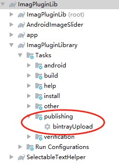

Add aar to maven
添加 com.github.dcendents.android-maven
github 地址：https://github.com/dcendents/android-maven-gradle-plugin 添加这个插件主要是为了生成 aar 文件。
Modification to the standard Maven plugin to be compatible with android-library projects (aar).
添加插件支持
Using the plugins DSL:
plugins {
id "com.github.dcendents.android-maven" version "2.1"
}Using legacy plugin application:
buildscript {
repositories {
maven {
url "https://plugins.gradle.org/m2/"
}
}
dependencies {
classpath "com.github.dcendents:android-maven-gradle-plugin:2.1"
}
}
apply plugin: "com.github.dcendents.android-maven"设置包名和版本 You can set the maven groupId and version in the script build.gradle:
group = 'com.example' version = '1.0'设置名称 The artifactId is set in settings.gradle:
rootProject.name = 'artifact'
Note: 1. For multi-projects build, please refer to issue #9: https://github.com/dcendents/android-maven-gradle-plugin/issues/9 2. 从 pom 中排除一些库：
//For proper exclusion in the generated maven pom, use both group and module notation:
compile('com.group:lib-module:1.0') {
exclude group: 'com.exclusion.group', module: 'module.name'
}
添加 com.jfrog.bintray 插件
github地址：https://github.com/bintray/gradle-bintray-plugin
Using the plugins DSL:
plugins {
id "com.jfrog.bintray" version "1.8.4"
}Using legacy plugin application:
buildscript {
repositories {
maven {
url "https://plugins.gradle.org/m2/"
}
}
dependencies {
classpath "com.jfrog.bintray.gradle:gradle-bintray-plugin:1.8.4"
}
}
apply plugin: "com.jfrog.bintray"示例：
buildscript {
repositories {
jcenter()
mavenCentral()
}
dependencies {
classpath 'com.android.tools.build:gradle:1.1.1'
classpath 'com.github.dcendents:android-maven-gradle-plugin:1.3'
}
}
//添加 com.jfrog.bintray 插件
plugins {
id "com.jfrog.bintray" version "1.5"
}
group = 'pub.devrel'
version = '0.1'
allprojects {
repositories {
jcenter()
}
apply plugin: 'com.android.library'
apply plugin: 'com.github.dcendents.android-maven'
}
install {
repositories.mavenInstaller {
pom.project {
name 'EasyGoogle'
description 'A wrapper library for basic functions of Google Play Services APIs'
url 'https://github.com/googlesamples/easygoogle'
inceptionYear '2015'
packaging 'aar'
groupId 'pub.devrel'
artifactId 'android-maven-example'
version '0.1'
licenses {
license {
name 'The Apache Software License, Version 2.0'
url 'http://www.apache.org/licenses/LICENSE-2.0.txt'
distribution 'repo'
}
}
scm {
connection 'https://github.com/googlesamples/easygoogle.git'
url 'https://github.com/googlesamples/easygoogle'
}
developers {
developer {
name 'Google'
}
}
}
}
}
bintray {
user = project.hasProperty('bintrayUser') ? project.property('bintrayUser') : System.getenv('BINTRAY_USER')
key = project.hasProperty('bintrayApiKey') ? project.property('bintrayApiKey') : System.getenv('BINTRAY_API_KEY')
configurations = ['archives']
pkg {
repo = 'maven'
name = 'gradle-bintray-plugin-android-maven-example'
userOrg = user
licenses = ['Apache-2.0']
vcsUrl = 'https://github.com/bintray/gradle-bintray-plugin.git'
version {
name = '0.1'
desc = 'Gradle Bintray Plugin 1.0 final'
vcsTag = '0.1'
attributes = ['gradle-plugin': 'com.use.less:com.use.less.gradle:gradle-useless-plugin']
}
}
}
task wrapper(type: Wrapper) {
gradleVersion = '2.4'
}最后在 android studio 右侧的 gradle 点击运行就可以了。
